Zero to Cloud-Native with IBM Cloud
Part 14: Deploy to a Remote Location with IBM Cloud Satellite
Kevin Collins ( kevincollins@us.ibm.com )
Kunal Malhotra ( kunal.malhotra3@ibm.com )
1 - Introduction
In the next few sections, we will be setting up and provisioning our zero to cloud native app to run on a remote location by leveraging IBM Cloud Satellite. IBM Cloud Satellite allows you to deploy IBM Cloud services anywhere you need them and is delivered as service through a single pane of glass.
In this series, we will be deploying IBM Cloud Satellite in a private only Virtual Private Cloud on IBM Cloud with no connectivity to the Internet. This will simulate a realistic use case in deploying IBM Cloud to a private location. While this tutorial series will walk through step by step in setting up a private virtual private cloud on IBM Cloud
2 -- Provision IBM Cloud Satellite
The first step to get started with IBM Cloud Satellite is to provision a Satellite location. A location are the central part of your satellite deployment and is where all of your IBM Cloud Services will run.
2.1 Create a Satellite Location
To get started in provisioning your satellite location, from the IBM Cloud menu navigate to and select Satellite.
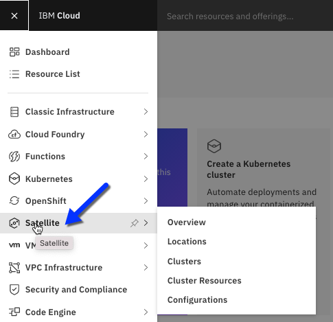
Next, get started by clicking Create a Satellite location.
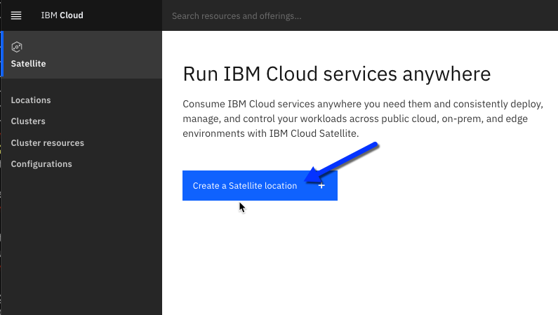
Give your satellite location a meaningful name such as satellite-zero-to-cloud-native, select the IBM Cloud location that will manage your satellite location, I will select Washington DC, and click Create Location.
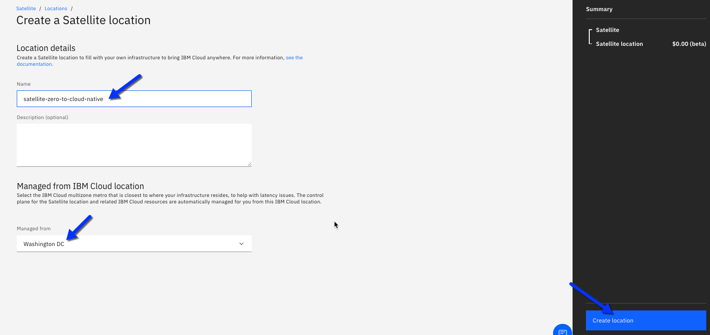
This will bring you to a screen that will show you satellite location is being created. This takes a couple of minutes.
After our location is created, we will need to add hosts to the location. These hosts can be anywhere, from onPrem, to a cloud provider such as AWS, Azure, GCP, or even IBM Cloud. The hosts can be physical or virtual, the choice is yours. There are minimum hardware requirements for your satellite hosts that you can view here:
https://cloud.ibm.com/docs/satellite?topic=satellite-host-reqs
2.2 Download Attach Hosts Script
Our satellite location will have two types of hosts which will be VPC instances. Hosts for the control plan and hosts for our IBM Cloud Managed OpenShift worker nodes. As you will see after your infrastructure hosts are provisioned we will need to run a script to attach those instances to our satellite location. A best practice is to include those scripts in the instance template we use to build the instances for our satellite location.
To get the script to attach hosts to the satellite location, click on Hosts from the satellite page.
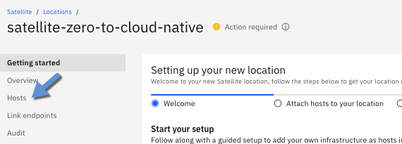
Then select Attach host
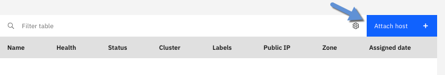
On the next screen, add a tag for the control plane instances. Entering meaningful tags is another best practice that will allow us to quickly find and identify specific hosts.
Label: host:02cn-control-plane
Filename: attachHost-satellite-02cn-control-plane.sh
Note: A best practice is to have different labels for control plane and worker node instances, so it is easy to tell them apart.
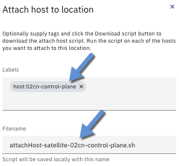
After entering these settings, click Download Script.
Repeat the same process of clicking Attach host and downloading a script for the worker nodes with these values:
Label: host:02cn-worker
Filename: attachHost-satellite-02cn-worker.sh
3 - Provision Infrastructure
To use a Satellite location, you need to provide infrastructure for Satellite to run on it. You can deploy Satellite wherever you want, it could be on-premises, on any cloud provider, or even at the edge.
In section 14A IBM Cloud VPC Infrastructure for Satellite, there are instructions to create infrastructure leveraging IBM Cloud Virtual Private Cloud. If you prefer to use a different cloud provider or even an on-premises infrastructure, then that is more than fine. The remaining steps of this tutorial series will work regardless of where you the infrastructure is deployed. That is the beauty of IBM Cloud Satellite, it runs wherever you are.
Click the link below to setup IBM Cloud VPC Infrastructure for your Satellite location:
IBM Cloud VPC Infrastructure for Satellite
4 Setup your Satellite Location
Once you have all of your infrastructure provisioned and ready, the first thing you will want to do is deploy an OpenShift Cluster.
4.1 Assign Control Plane Hosts
Before we can deploy an OpenShift cluster, we need to setup up our control plan by assigning the hosts we created for the control plane to the control plane.
While in the IBM Cloud Console, from the satellite menu click on Locations and then your satellite-zero-to-cloud-native location.
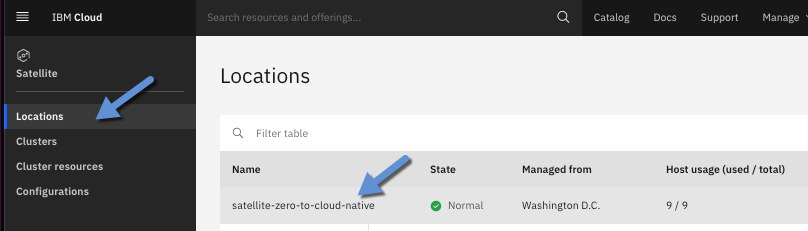
On next screen, click on hosts.
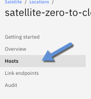
This will show you a list of all the hosts that are assigned to your location. When you provisioned the VSIs, the attachHosts script that we ran is what has registered your hosts with your satellite location.
On the next screen, you will see that all of your hosts are Ready and Unassigned. Next to each 'control plane' host, click Assign host by clicking the three dots.
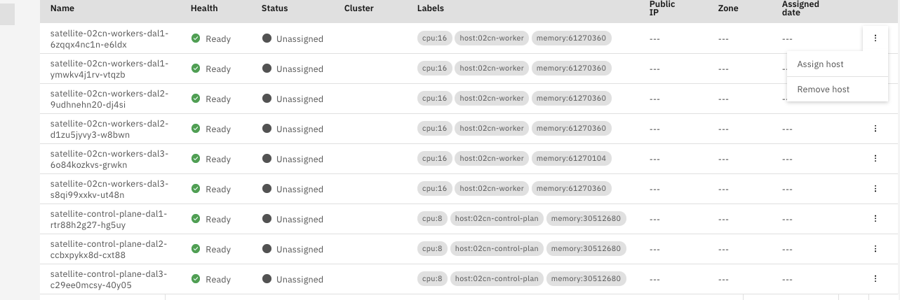
On the next screen you assign the host to a cluster. Make the following assignments:
satellite-control-plane-dal1 = us-east-1
satellite-control-plane-dal2 = us-east-2
satellite-control-plane-dal3 = us-east-3
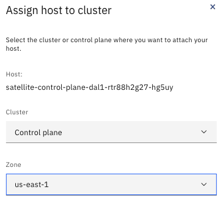
Assigning hosts takes a couple of minutes. When the assignment is complete, you will see the status of the hosts change as follows:
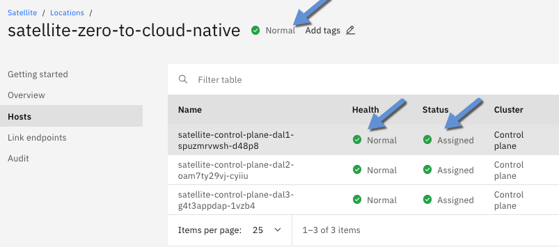
4.2 Create IBM Cloud Managed OpenShift Cluster
Before trying to create a cluster, you need to make sure your Satellite location and infrastructure control plane is ready to deploy. Navigating to your satellite location, ensure that the control plan hosts are in Healthy State and the overall Satellite location is normal.
To provision a RedHat OpenShift on IBM Cloud cluster, go to the IBM Cloud catalog, search for OpenShift, and click on the tile.
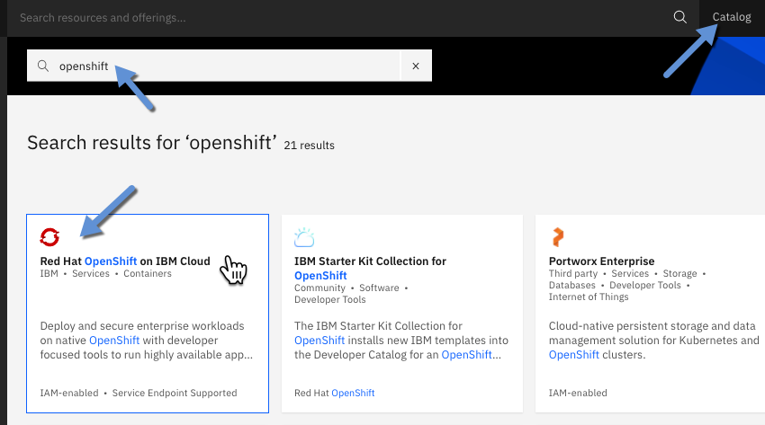
On the next screen, enter the following information about your Satellite location to create a new cluster.
Version: Select the most recent version of OpenShift.
Infrastructure: Satellite
Location -- Resource Group -- zero-to-cloud-native
Location -- Satellite -- satellite-zero-to-cloud-native
Cluster name: satellite-02cn
After entering these settings, click create Cluster. This will go off and start building the master nodes of your cluster and takes about 20 minutes.
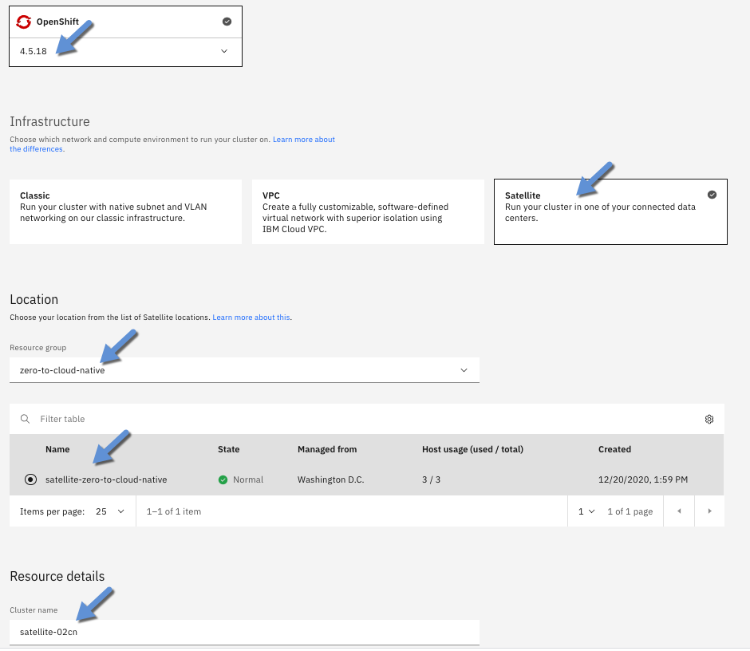
While this is completing, navigate to the Overview page of your cluster and you will notice a couple of things.
The Master Status will show Deploy in progress, this will change to Ready when the master nodes are completely deployed.
The Worker Nodes section will indicate that you don't have any nodes yet.
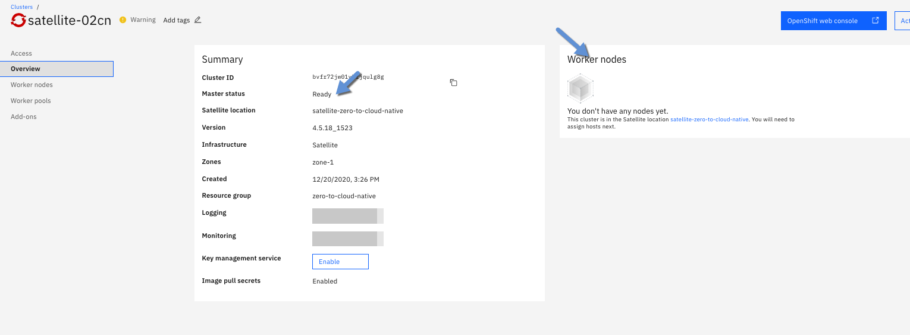
The next thing we will need to do is assign worker nodes to our cluster.
4.3 Assign Worker Nodes
To assign worker nodes to our satellite cluster, navigate back to your satellite location and the hosts tab.
Next to each worker node, click on Assign host.
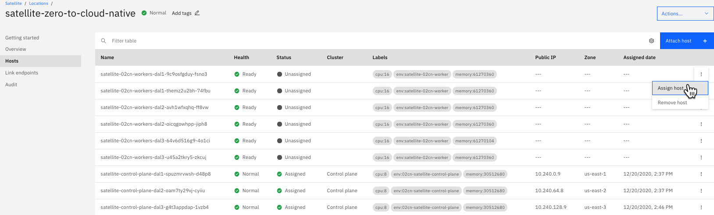
And select the cluster you created in the previous step and click Assign host.
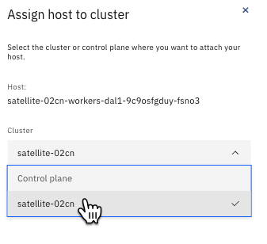
Repeat the same steps for all the worker nodes.
This will register hosts that your IBM Cloud Managed OpenShift cluster will use as worker nodes. In about 10 minutes, you will find all your worker nodes in a Normal status and you can start using your cluster.
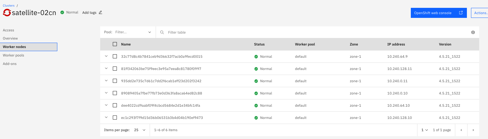
4.4 Create an OpenVPN Connection
Because our cluster is on a private VPC with no Internet connectivity, we will need to create a VPN connection into our VPC. The instructions are rather long, so please refer to part 14B VPN Guide for detailed instructions on doing so.
You can find instructions here on how to create a VPN Connection to IBM Cloud: VPN Guide
4.5 Enable the OpenShift Console
There is one last step we need to perform so we can use the OpenShift console. This does require that you have successfully configured an OpenVPN connection into your VPC.
To test your VPN connection has been successful, run the following commands:
Log into IBM Cloud:
ibmcloud login --apikey=\<your cloud apikey\>
Target your cluster:
ibmcloud ks cluster config -c satellite-02cn \--admin
*If you used a different cluster name, you will need to update satellite-02cn with that cluster name
View your worker nodes:
oc get nodes
If you see a list of all your worker nodes like the following then your VPN connection is successful! ... if not, revisit the OpenVPN section.
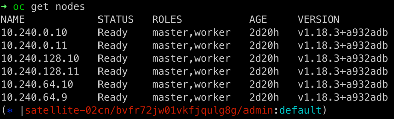
Now that we have verified our VPN connection was successful, we need to execute a couple more commands so that our OpenShift console works. These commands require calicoctl. If you don't have the calicoctl CLI installed on your system you can do so with the following command:
brew install calicoctl
Before we can launch the OpenShift console, we need to enable VXLAN encapsulation instead of the default IP in IP encapsulation.
To do this, save the following yaml file.
pool.yaml
apiVersion: projectcalico.org/v3
kind: IPPool
metadata:
name: default-ipv4-ippool
spec:
blockSize: 26
cidr: 172.30.0.0/16
ipipMode: Never
natOutgoing: true
nodeSelector: all()
vxlanMode: Always
and run the following:
ibmcloud ks cluster config \--admin -c satellite-02cn
export DATASTORE_TYPE=kubernetes
calicoctl apply -f /path/to/pool.yaml
Now for the moment of truth! Navigate to your satellite-02cn cluster in the IBM Cloud console and click on OpenShift web console.
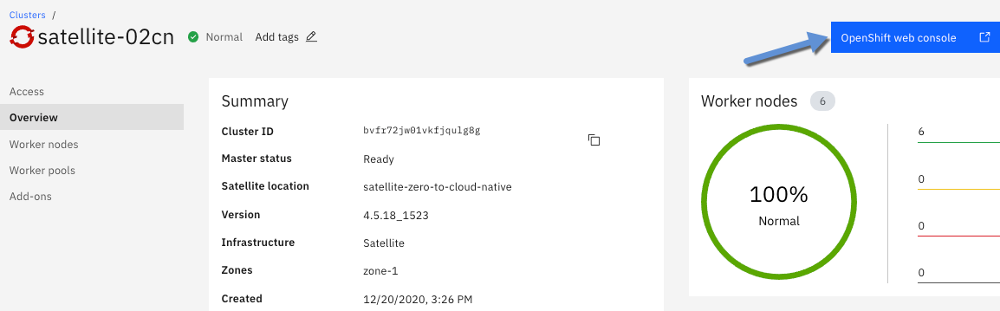
This will launch your OpenShift Console.
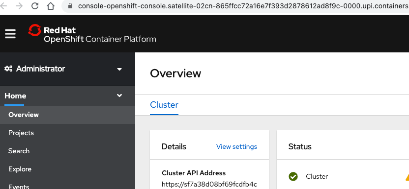
Congratulations, you have now setup and configured a private satellite location with an OpenShift Cluster managed by IBM Cloud!